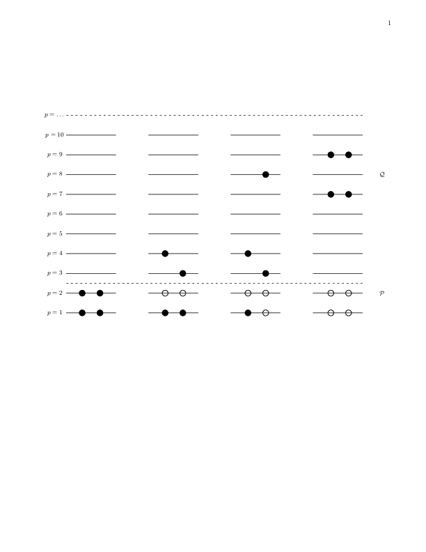
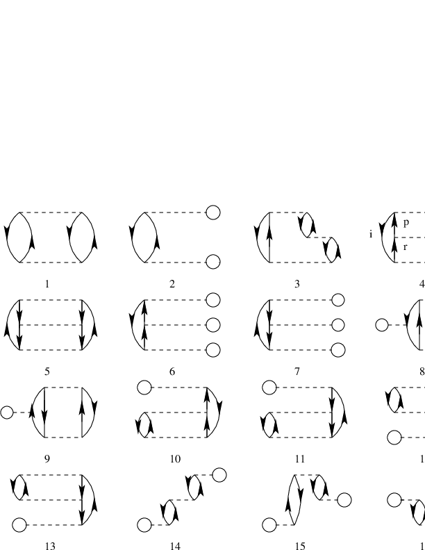
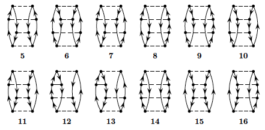
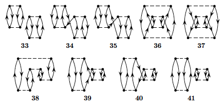

Figure 3: One-particle-one-hole excitations to fourth order.

Plan for the Talent course
Outline of the project(s)
Some basic ingredients for a successful numerical project
The pairing model as warm-up problem
Exercise 1: Pairing Hamiltonian
Project 2: Coupled cluster calculations with doubles excitations only for the pairing model
Project 3: Green's function calculations with a second order self-energy for the pairing model
Project 4: Coupled cluster calculations with doubles excitations only for infinite nuclear matter
Project 5: Green's function calculations for finite nuclei and infinite nuclear matter
Project 6: Brueckner-Hartree-Fock calculations for infinite nuclear and neutron matter
Together with the regular lectures in the morning, the hope is that during these three weeks you will be able to write and run a program which implements at least one of the methods discussed during the lectures. The lectures will also cover additional material which aims at giving you a broader view on what can be achieved with the methods to be discussed. Combined with the 'hands-on' afternoon sessions, the hope is that the lectures and the computational projects will together allow you to achieve these goals. For those of you who would like to get credits to be transferred to your home university, the project(s) can be extended upon allowing you to include further elements to the many-body methods. The load of the final project is estimated to be 80 hours. In total, attendence at the course and doing the final project amounts to seven ECTS. There is no credit transfer for Northern-American students.
What is outlined here are several paths that will allow you to develop a program which can be used to study nuclear systems. In particular, we will focus on two widely used many-body methods, coupled cluster theory with its various approximations and Green's function theory.
Before we begin, we would however like to present a warm-up problem which contains many of the basic elements of the many-body methods exposed in this course. Furthermore, the simple pairing model described below, provides us with benchmark results to which we can compare the different many-body methods. The basic elements of the model (single-particle basis and Hamiltonian) can easily be (if structured properly in your program) extended to studies of more realistic systems, either finite systems like nuclei or infinite nuclear matter.
The first part of the project is a traditional paper and pencil part, where the aim is to apply second quantization in order to set up the Hamiltonian matrix to be diagonalized. We will study this model the first two afternoons of the school.
At most, with four particles in four doubly degenerate single particle states and no broken pairs, you will have a \( 6 \times 6 \) Hamiltonian matrix to diagonalize. Below, you will find a simple python program which performs the diagonalization and plots the eigenvalues. Parts of this warm-up exercise are solved below. These aspects will be discussed partly during the lectures but also during some of the afternoon sessions. Practical guidelines for code writing will also be discussed.
This exercise will allow us to start writing our first skeleton for a coupled cluster theory program at the so-called doubles level of truncation. It will also, for those of you who will prefer to study Green's functions, serve as a starting point for developing the skeleton of a program for this method. The aim is to finish this part of the program during the first week.
With a program which then benchmarks the simple pairing model, we will turn our attention to more realistic systems. Here we propose the following paths that can be studied with either coupled cluster theory or Green's function theory. Many of the technicalities will be discussed at the lectures and the afternoon sessions during the last two weeks.
When working on the projects, we recommend strongly that you form teams of two to three participants. Every team must have a github account where we can monitor your progress and give you appropriate feedback.
If you have not used version control before now, it is time to do so. Proper version control is central to a good ethical scientific conduct. We do require that you use some kind of version control software when working on the projects. We recommend strongly github. All lectures and additional material is available at the github address of the course
Furthermore, before coming to the course, we recommend that you refresh your knowledge on second quantization. If your background in second quantization is rudimentary and mentioning of Wick's leave you gazing at the stars, we recommend that you study the material at the course web site on second quantization. Try in particular to do some of the exercises.
We will also ask you to come with your own laptop and have installed either a
You can use Python as programming language as well, but normally the efficiency of Python for the problems addressed in this course is lower than for codes written in Fortran or c++. We recommend however that use Python as a scripting language for running codes and making plots, as well as using the ipython notebooks provided by us.
When building up a numerical project there are several elements you should think of, amongst these we take the liberty of mentioning the following:
We present a simplified Hamiltonian consisting of an unperturbed Hamiltonian and a so-called pairing interaction term. It is a model which to a large extent mimicks some central features of atomic nuclei, certain atoms and systems which exhibit superfluiditity or superconductivity. To study this system, we will use a mix of many-body perturbation theory (MBPT), Hartree-Fock (HF) theory and full configuration interaction (FCI) theory. The latter will also provide us with the exact answer. When setting up the Hamiltonian matrix you will need to solve an eigenvalue problem.
We define first the Hamiltonian, with a definition of the model space and the single-particle basis. Thereafter, we present the various exercises (some of them are solved).
The Hamiltonian acting in the complete Hilbert space (usually infinite dimensional) consists of an unperturbed one-body part, \( \hat{H}_0 \), and a perturbation \( \hat{V} \).
We limit ourselves to at most two-body interactions and our Hamiltonian is represented by the following operators $$ \hat{H} = \sum_{\alpha\beta}\langle \alpha |h_0|\beta\rangle a_{\alpha}^{\dagger}a_{\beta}+\frac{1}{4}\sum_{\alpha\beta\gamma\delta}\langle \alpha\beta| V|\gamma\delta\rangle a_{\alpha}^{\dagger}a_{\beta}^{\dagger}a_{\delta}a_{\gamma}, $$ where \( a_{\alpha}^{\dagger} \) and \( a_{\alpha} \) etc. are standard fermion creation and annihilation operators, respectively, and \( \alpha\beta\gamma\delta \) represent all possible single-particle quantum numbers. The full single-particle space is defined by the completeness relation $$ \hat{{\bf 1}} = \sum_{\alpha=1}^{\infty}|\alpha \rangle \langle \alpha|. $$ In our calculations we will let the single-particle states \( |\alpha\rangle \) be eigenfunctions of the one-particle operator \( \hat{h}_0 \). Note that the two-body part of the Hamiltonian contains anti-symmetrized matrix elements.
The above Hamiltonian acts in turn on various many-body Slater determinants constructed from the single-basis defined by the one-body operator \( \hat{h}_0 \). As an example, the two-particle model space \( \mathcal{P} \) is defined by an operator $$ \hat{P} = \sum_{\alpha\beta =1}^{m}|\alpha\beta \rangle \langle \alpha\beta|, $$ where we assume that \( m=\dim(\mathcal{P}) \) and the full space is defined by $$ \hat{P}+\hat{Q}=\hat{{\bf 1}}, $$ with the projection operator $$ \hat{Q} = \sum_{\alpha\beta =m+1}^{\infty}|\alpha\beta \rangle \langle \alpha\beta|, $$ being the complement of \( \hat{P} \).
Our specific model consists of \( N \) doubly-degenerate and equally spaced single-particle levels labelled by \( p=1,2,\dots \) and spin \( \sigma=\pm 1 \). These states are schematically portrayed in Fig. 1. The first two single-particle levels define a possible model space, indicated by the label \( \mathcal{P} \). The remaining states span the excluded space \( \mathcal{Q} \).
We write the Hamiltonian as $$ \hat{H} = \hat{H}_0 + \hat{V} , $$ where $$ \hat{H}_0=\xi\sum_{p\sigma}(p-1)a_{p\sigma}^{\dagger}a_{p\sigma} $$ and $$ \hat{V}=-\frac{1}{2}g\sum_{pq}a^{\dagger}_{p+} a^{\dagger}_{p-}a_{q-}a_{q+}. $$ Here, \( H_0 \) is the unperturbed Hamiltonian with a spacing between successive single-particle states given by \( \xi \), which we will set to a constant value \( \xi=1 \) without loss of generality. The two-body operator \( \hat{V} \) has one term only. It represents the pairing contribution and carries a constant strength \( g \).
The indices \( \sigma=\pm \) represent the two possible spin values. The interaction can only couple pairs and excites therefore only two particles at the time, as indicated by the rightmost four-particle state in Fig. 1. There one of the pairs is excited to the state with \( p=9 \) and the other to the state \( p=7 \). The two middle possibilities are not possible with the present model. We label single-particle states within the model space as hole-states. The single-particle states outside the model space are then particle states.
In our model we have kept both the interaction strength and the single-particle level as constants. In a realistic system like an atom or the atomic nucleus this is not the case.
Figure 1: Schematic plot of the possible single-particle levels with double degeneracy. The filled circles indicate occupied particle states while the empty circles represent vacant particle(hole) states. The spacing between each level \( p \) is constant in this picture. The first two single-particle levels define our possible model space, indicated by the label \( \mathcal{P} \). The remaining states span the excluded space \( \mathcal{Q} \). The first state to the left represents a possible ground state representation for a four-fermion system. In the second state to the left, one pair is broken. This possibility is however not included in our interaction.

a) Show that the unperturbed Hamiltonian \( \hat{H}_0 \) and \( \hat{V} \) commute with both the spin projection \( \hat{S}_z \) and the total spin \( \hat{S}^2 \), given by $$ \hat{S}_z := \frac{1}{2}\sum_{p\sigma} \sigma a^{\dagger}_{p\sigma}a_{p\sigma} $$ and $$ \hat{S}^2 := \hat{S}_z^2 + \frac{1}{2}(\hat{S}_+\hat{S}_- + \hat{S}_-\hat{S}_+), $$ where $$ \hat{S}_\pm := \sum_{p} a^{\dagger}_{p\pm} a_{p\mp}. $$ This is an important feature of our system that allows us to block-diagonalize the full Hamiltonian. We will focus on total spin \( S=0 \). In this case, it is convenient to define the so-called pair creation and pair annihilation operators $$ \hat{P}^{+}_p = a^{\dagger}_{p+}a^{\dagger}_{p-}, $$ and $$ \hat{P}^{-}_p = a_{p-}a_{p+}, $$ respectively.
Show that you can rewrite the Hamiltonian (with \( \xi=1 \)) as $$ \hat{H}=\sum_{p\sigma}(p-1)a_{p\sigma}^{\dagger}a_{p\sigma} -\frac{1}{2}g\sum_{pq}\hat{P}^{+}_p\hat{P}^{-}_q. $$ Show also that Hamiltonian commutes with the product of the pair creation and annihilation operators. This model corresponds to a system with no broken pairs. This means that the Hamiltonian can only link two-particle states in so-called spin-reversed states.
b) Construct thereafter the Hamiltonian matrix for a system with no broken pairs and total spin \( S=0 \) for the case of the four lowest single-particle levels indicated in the Fig. 1. Our system consists of four particles only. Our single-particle space consists of only the four lowest levels \( p=1,2,3,4 \). You need to set up all possible Slater determinants. Find all eigenvalues by diagonalizing the Hamiltonian matrix. Vary your results for values of \( g\in [-1,1] \). We refer to this as the exact calculation. Comment the behavior of the ground state as function of \( g \).
Solution. We give first the final Hamiltonian matrix $$ H = \left ( \begin{array}{cccccc} 2\delta -g & -g/2 & -g/2 & -g/2 & -g/2 & 0 \\ -g/2 & 4\delta -g & -g/2 & -g/2 & -0 & -g/2 \\ -g/2 & -g/2 & 6\delta -g & 0 & -g/2 & -g/2 \\ -g/2 & -g/2 & 0 & 6\delta-g & -g/2 & -g/2 \\ -g/2 & 0 & -g/2 & -g/2 & 8\delta-g & -g/2 \\ 0 & -g/2 & -g/2 & -g/2 & -g/2 & 10\delta -g \end{array} \right ) $$ The following python program diagonalizes the above Hamiltonian matrix for a given span of interaction strength values, performing both a full configuration interaction calculation and a truncated one. For the truncated case we leave out the \( 4p4h \) state. This means that in addition to the ground state we include the four possible \( 2p2h \) states. Such a calculation is normally called a configuration interaction calculation.
The eigenvalues and eigenvectors result from the diagonalization of the above Hamiltonian matrix. In the discussions below and in connection with the first stage of the numerical project, we will use these results to benchmark various approximative methods. The lowest eigenvalue corresponds to the ground state energy and we will refer to it as the exact energy when no truncations in the space of possible Slater determinants are made..
From our results, we note some important differences between the full configuration interaction (FCI) calculation and the truncated configuration interaction calculation (CI). Full configuration interaction is an exact method, but is only possible if and only if we have a complete and finite SD basis for our system. In practice, we usually don't have this. Non-complete CI however, is always possible, but yiels approximative results only. The method is however still variational however, meaning that we guaranteed that the approximation will be equal or bigger to the true result. Perturbation theory however, is non-variational and there is no guarantee that including higher orders in the perturbation gives an improved result, as we will see below.
In an FCI case, we are including all possible exictations to infinite order, meaning we have all possible \( 1p1h \) , \( 2p2h \) etc configurations, up to \( 4p4h \) excitations for our selected model. Due to the nature of the pairing interaction and our selection of specific quantum numbers for the many-body states, we do not have any \( 1p1h \) or \( 3p3h \) excitations. In the above CI case, we truncate those excitations somewhere. If we were to draw the diagrams of the interactions that contribute to this CI case, there would be an infinite number of them, as we can have arbitrarily long chains of operators that still only have at most 2p2h intermediate states.
c) We switch now to approximative methods, in our case Hartree-Fock theory and many-body perturbation theory. Hereafter we will define our model space to consist of the single-particle levels \( p=1,2 \). The remaining levels \( p=3,4 \) define our excluded space. This means that our ground state Slater determinant consists of four particles which can be placed in the doubly degenerate orbits \( p=1 \) and \( p=2 \). Our first step is to perform a Hartree-Fock calculation with the pairing Hamiltonian. Write first the normal-ordered Hamiltonian with respect to the above reference state given by four spin \( 1/2 \) fermions in the single-particle levels \( p=1,2 \). Define what is meant by a canonical Hartree-Fock case, a non-canonical case and a general case. For all three cases, write down the normal-ordered Hamiltonian and draw the diagrammatic form of the Hamiltonian for all three cases.
d) We will now set up the Hartree-Fock equations by varying the coefficients of the single-particle functions. The single-particle basis functions are defined as $$ \psi_p = \sum_{\lambda} C_{p\lambda}\psi_{\lambda}. $$ where in our case \( p=1,2,3,4 \) and \( \lambda=1,2,3,4 \), that is the first four lowest single-particle orbits of Fig. 1. Set up the Hartree-Fock equations for this system by varying the coefficients \( C_{p\lambda} \) and solve them for values of \( g\in [-1,1] \). Comment your results and compare with the exact solution. Discuss also which diagrams in Fig. 2 that can be affected by a Hartree-Fock basis. Compute the total binding energy using a Hartree-Fock basis and comment your results.
e) We will now study the system using non-degenerate Rayleigh-Schroedinger perturbation theory to third order in the interaction. If we exclude the first order contribution, all possible diagrams (so-called anti-symmetric Goldstone diagrams) are shown in Fig. 2.
Figure 2: Diagrams to third order in the interaction, including also non-canonical Hartree-Fock diagrams. The first order term is excluded. All interaction vertices represent anti-symmetrized matrix elements.

Based on the form of the interaction, which diagrams contribute to the binding energy of the ground state? Write down the expressions for the diagrams that contribute and find the contribution to the ground state energy as function \( g\in [-1,1] \). Comment your results. Compare these results with those you obtained from the exact diagonalization with and without the \( 4p-4h \) state. Discuss your results for a canonical Hartree-Fock basis and a non-canonical Hartree-Fock basis.
f) Diagram 1 in Fig. 2 represents a second-order contribution to the energy and a so-called \( 2p-2h \) contribution to the intermediate states. Write down the expression for the wave operator in this case and compare the possible contributions with the configuration interaction calculations without the \( 4p-4h \) Slater determinant. Comment your results for various values of \( g\in [-1,1] \).
g) We limit now the discussion to the canonical Hartree-Fock case only. To fourth order in perturbation theory we can produce diagrams with \( 1p-1h \) intermediate excitations as shown in Fig. 3, \( 2p-2h \) excitations, see Fig. 4, \( 3p-3h \) excitations as shown in Fig. 5 and finally so-called diagrams with intermediate four-particle-four-hole excitations, see Fig. 6.
Figure 3: One-particle-one-hole excitations to fourth order.
Figure 4: Two-particle-two-hole excitations to fourth order.

Figure 5: Three-particle-three-hole excitations to fourth order.

Figure 6: Four-particle-four-hole excitations to fourth order.

Define first linked and unlinked diagrams and explain briefly Goldstone's linked diagram theorem. Based on the linked diagram theorem and the form of the pairing Hamiltonian, which diagrams will contribute to fourth order?
Calculate the energy to fourth order with a canonical Hartree-Fock basis for \( g\in [-1,1] \) and compare with the full diagonalization case in exercise b). Discuss the results.
Solution. To fourth order in the interaction there are several diagrams to consider. Fortunately, due to the character of the pairing Hamiltonian, several of these contributions are zero. We limit our discussions also to include the canonical HF-case only. All of the diagrams in the canonical case are shown in figures 3, 4, 5 and 6 above. Using also the linked diagram theorem, where a diagram is called unlinked if and only if it has a disconnected part that is closed, we can eliminate some further diagrams. Goldstones linked-diagram theorem states that all unliked diagrams will cancel against the renormalization terms in Rayleigh-Schroedinger perturbation theory, meaning that we can define the energy to each order as a sum of linked diagrams only. We can then disregard diagram 33 and 41.
Let us now go through all the diagrams and find those that vanish due to having broken pairs, i.e., the diagrams that vanish due to our specific interaction. Take for example diagram 1, which vanishes due to having a term \( \langle ab\vert \hat{v} \vert ci\rangle \). From this argument, we see that all four diagrams from figure 3 vanish. Similar arguments shows that most diagrams in figure 4 also dissapear. Going through all the diagrams, we see that 5, 6, 14 and 15 are the ones that do not vanish in figure 4. For figure 5 we actually see that all diagrams vanish again. For figure 6 we already found that 33 and 41 vanished due to being unlinked—the rest contribute to the perturbative expansion of the energy. The diagrams of figures 3 and 5 vanish since they involve \( 1p1h \) and \( 3p3h \) excitations, respectively.
The expressions for these diagrams can easily be written in terms of a simple Python program. Note however that for every diagram we do actually perform loops over every single-particle state. As we will see later, this is extremely inefficient from a computational point of view. In our discussions of the projects below, we will rewrite the computations of most diagrams in terms of efficient matrix-matrix multiplications or matrix-vector multiplications. The following Python program gives us the final results for perturbation theory to fourth order in the interaction. The resulting figures include also plots of the relative error in the correlation energy. That is, we compare the computed correlation in perturbation theory with the result from the exact diagonalization discussed above.
Running the Python program shows us that the approximation to both second and third order are very good when the interaction strength is small and contained in the interval \( g\in[-0.5,0.5] \), but as the interaction gets stronger the approximation worsens. We also note that the third-order result is actually worse than the second order result for larger values of the interaction strength, indicating that there is no guarantee that higher orders in many-body perturbation theory may reduce the relative error in a systematic way. This is seen in particular for the results to fourth order. For negative interaction strengths fourth order gives a better result than second and third order, while for \( g>0 \) the relative error is worse. We note also the non-variational character of many-body perturbation theory, with results at different undershooting the true ground state correlation energy.
This project serves as a continuation of the pairing model with the aim being to solve the same problem but now by developing a program that implements the coupled cluster method with double excitations only. In doing so you will find it convenient to write classes which define the single-particle basis and the Hamiltonian. Your functions that solve the coupled cluster equations will then just need to set up variables which point to interaction elements and single-particle states with their pertinent quantum numbers. Use for example the setup discussed in the FCI lectures for the pairing model.
a) Explain why no single excitations are involved in this model.
b) Set up the coupled cluster equations for doubles excitations and convince yourself about their meaning and correctness.
c) Write a class which holds single-particle data like specific quantum numbers, single-particle Hamiltonian etc. Write also a class which sets up and stores two-body matrix elements defined by the single-particle states. Write thereafter functions/classes which implement the coupled cluster method with doubles only.
d) Compare your results with those from the exact diagonalization with and without the \( 4p4h \) excitation. Compare also your results to perturbation theory at different orders, in particular to second order. Discuss your results. If other students are solving the same problem using Green's function theory, you can also compare your results with those obtained from Green's function theory. The aim is to finalize this part during the first week. The codes you will develop can be used as a starting point for the second part of the project.
This project serves as a continuation of the pairing model with the aim being to solve the same problem but now by developing a program that implements the self-consistent Green's function method with a second order self energy. This is what is called the ADC(2) approximation scheme. In doing so you will find it convenient to write classes which define the single-particle basis and the Hamiltonian. One more, important, class will be needed to store the one-body propagator. Your functions that solve the ADC(3) will then just need to set up variables which point to interaction elements, single-particle states and Dyson states with their pertinent quantum numbers. Use for example the setup discussed in the FCI lectures for the pairing model.
a) Write the diagrams for the self-energy at first and second order, using the Lehman representation for the latter and HF reference state. Write the first order diagrams also in terms of a fully dressed propagator.
b) Set up the Dyson-ADC(2) equations and convince yourself about their meaning and correctness.
c) Write a class that holds the one-body propagator in Lehman representation. In this, the Dyson orbits (or overlap functions) are expanded in terms of the basis exactly as for the HF equations above. However, you will need to handle a much larger number of orbits and their respective energies. You will also need to store particle and hole orbits separately. Using the results of your HF calculations above, build a simple HF propagator. This will be your reference state.
d) Write a class which holds single-particle data like specific quantum numbers, single-particle Hamiltonian etc. Write also a class which sets up and stores two-body matrix elements defined by the single-particle states.
e) Use the above classes to solve the ADC(2) euqatoions in the following three steps:
This project forms one possible final path for the remaining two weeks. It can also be extended in order to define the final project. You should be able to use the program you developed in connection with the solution of the pairing model.
a) Explain why we don't have single excitations in infinite matter.
b) Set up the relavent quantum numbers for a cartesian basis with plane waves in three dimensions. Make the according changes to the code you developed in connection with the pairing model. Implement periodic boundary conditions.
c) Replace the two-body interaction from the pairing model with the Minnesota potential model discussed during the lectures.
d) Use the program you developed in connection with the pairing model to perform coupled cluster calculations in infinite matter with doubles excitations. Perform coupled cluster calculations for infinite nuclear matter with the Minnesota interaction for different particle numbers (to be inserted later). Limit yourself to two-particle and two-hole intermediate excitations only.
e) Compare the two-particle only excitations with a finite number of particles with results obtained with Brueckner-Hartree-Fock calculations in the thermodynamic limit. Comment your results
f) The final challenge is to include particle-hole excitations and compare the results with those from Diffusion Monte Carlo calculations discussed during the lectures. This part can be included in the final project.
The hard work in learning how to deal with SCGF was done in Project 2. Now, we make it fancy and extend it to some more real systems rather than a simple pairing model. This can be done very similarly either for finite nuclei or for infinite nuclear matter. However, you should choose only one this two paths and focus only on that: it is already a lot of work doing one. We will do this at the ADC(2) level and toward the end of the project we will consider an extended version of it to make useful comparison with the Brueckner-HF and CCD calculations done by others.
Either of the two path of this project forms one possible final path for the remaining two weeks. It can also be extended in order to define the final project. You should be able to use the program you developed in connection with the solution of the pairing model.
a) Explain why we don't have single excitations in infinite matter.
b) Set up the relavent quantum numbers for your problem:
c) Replace the two-body interaction from the pairing model with the Minnesota potential model discussed during the lectures (functions for matrix elements in harmonic oscillator basis will be provided).
d) Use the program you developed in connection with the pairing model to perform SCGF calculations at second order. Perform calculations with the Minnesota interaction as follows:
At this point, limit yourself to the ADC(2) scheme only.
e) Add the two-particle interactions to the 2p1h sector of the Dyson-ADC(2) matrix and suppress the 2h1p sector: this should lead you to an approximation equivalent to the Brueckner-Hartree-Fock scheme. Compare your results obtained with those obetain in CCD with only twp-particle intermediate excitations. If you are doing infinite matter, compare to the Brueckner-Hartree-Fock calculations in the thermodynamic limit (from project 6). Comment your results.
f) The final challenge is to keep both the 2p1h and the 2h1p sectors and fill the ADC(n) matrix with all the two-particle, the two-hole, and the particle-hole interactions. This last change results in the so called 'Extended ADC(2)' approximation scheme. Investigate the effects that pp, hh and ph correlations. This part can be included in the final project. And if you already got all the way to point e), this last part should be a relatively easy improvement to make!
g) Are you felling particularly ambitious? One can further modify the code by adding the missing 3rd order terms to the couplings between the single particle sector and the 2p1h/2h1p sectors. This will give you a full blown ADC(3) calculation. Study the effects of this last change on the energy of the main quasiparticle peaks. chemist need this to obtain correct ionization potentials and affinities.
a) We will use the simple Minnesota model discussed during the lectures. This will allow us to make detailed comparisons with the Coupled cluster and the Green's function calculations. The first part deals with setting up the real and imaginary part of \( T \)-matrix in free space using a partial wave decomposition. You will need to define integration points and weights in momentum space and treat properly the poles which arise. With a working program, compute the relevant phase shifts. Extract also the scattering lengths for \( s \) waves (orbital momentum \( l=0 \)).
Solution. For scattering states, the energy is positive, \( E>0 \). The Lippman-Schwinger equation (a rewrite of the Schroedinger equation) is an integral equation where we have to deal with the amplitude \( R(k,k') \) (reaction matrix, which is the real part of the full complex \( T \)-matrix) defined through the integral equation for one partial wave (no coupled-channels) $$ \begin{equation} R_l(k,k') = V_l(k,k') +\frac{2}{\pi}{\cal P} \int_0^{\infty}dqq^2V_l(k,q)\frac{1}{E-q^2/m}R_l(q,k'). \tag{1} \end{equation} $$ For negative energies (bound states) and intermediate states scattering states blocked by occupied states below the Fermi level.
The symbol \( {\cal P} \) indicates that Cauchy's principal-value prescription is used in order to avoid the singularity arising from the zero of the denominator.
The total kinetic energy of the two incoming particles in the center-of-mass system is $$ E=\frac{k_0^2}{m_n}. $$
The matrix \( R_l(k,k') \) relates to the the phase shifts through its diagonal elements as $$ \begin{equation} R_l(k_0,k_0)=-\frac{tan\delta_l}{mk_0}. \tag{2} \end{equation} $$ In order to solve the Lippman-Schwinger equation in momentum space, we need first to write a function which sets up the mesh points. We need to do that since we are going to approximate an integral through $$ \int_a^bf(x)dx\approx\sum_{i=1}^Nw_if(x_i), $$ where we have fixed \( N \) lattice points through the corresponding weights \( w_i \) and points \( x_i \). Typically obtained via methods like Gaussian quadrature.
If you use Gauss-Legendre the points are determined for the interval \( x_i\in [-1,1] \) You map these points over to the limits in your integral. You can then use the following mapping $$ k_i=const\times tan\left\{\frac{\pi}{4}(1+x_i)\right\}, $$ and $$ \omega_i= const\frac{\pi}{4}\frac{w_i}{cos^2\left(\frac{\pi}{4}(1+x_i)\right)}. $$ If you choose units fm$^{-1}$ for \( k \), set \( const=1 \). If you choose to work with MeV, set \( const\sim 200 \) (\( \hbar c=197 \) MeVfm).
The principal value integral is rather tricky to evaluate numerically, mainly since computers have limited precision. We will here use a subtraction trick often used when dealing with singular integrals in numerical calculations. We introduce first the calculus relation $$ \int_{-\infty}^{\infty} \frac{dk}{k-k_0} =0. $$ It means that the curve \( 1/(k-k_0) \) has equal and opposite areas on both sides of the singular point \( k_0 \). If we break the integral into one over positive \( k \) and one over negative \( k \), a change of variable \( k\rightarrow -k \) allows us to rewrite the last equation as $$ \int_{0}^{\infty} \frac{dk}{k^2-k_0^2} =0. $$
We can then express a principal values integral as $$ \begin{equation} {\cal P}\int_{0}^{\infty} \frac{f(k)dk}{k^2-k_0^2} = \int_{0}^{\infty} \frac{(f(k)-f(k_0))dk}{k^2-k_0^2}, \tag{3} \end{equation} $$ where the right-hand side is no longer singular at \( k=k_0 \), it is proportional to the derivative \( df/dk \), and can be evaluated numerically as any other integral.
We can then use this trick to obtain $$ \begin{equation} R(k,k') = V(k,k') +\frac{2}{\pi} \int_0^{\infty}dq \frac{q^2V(k,q)R(q,k')-k_0^2V(k,k_0)R(k_0,k') } {(k_0^2-q^2)/m}. \tag{4} \end{equation} $$ This is the equation to solve numerically in order to calculate the phase shifts. We are interested in obtaining \( R(k_0,k_0) \).
How do we proceed?
Using the mesh points \( k_j \) and the weights \( \omega_j \), we reach $$ R(k,k') = V(k,k') +\frac{2}{\pi} \sum_{j=1}^N\frac{\omega_jk_j^2V(k,k_j)R(k_j,k')} {(k_0^2-k_j^2)/m} -\frac{2}{\pi}k_0^2V(k,k_0)R(k_0,k') \sum_{n=1}^N\frac{\omega_n} {(k_0^2-k_n^2)/m}. $$ This equation contains now the unknowns \( R(k_i,k_j) \) (with dimension \( N\times N \)) and \( R(k_0,k_0) \).
We can turn it into an equation with dimension \( (N+1)\times (N+1) \) with a mesh which contains the original mesh points \( k_j \) for \( j=1,N \) and the point which corresponds to the energy \( k_0 \). Consider the latter as the 'observable' point. The mesh points become then \( k_j \) for \( j=1,n \) and \( k_{N+1}=k_0 \).
With these new mesh points we define the matrix $$ \begin{equation} A_{i,j}=\delta_{i,j}-V(k_i,k_j)u_j, \tag{5} \end{equation} $$ where \( \delta \) is the Kronecker \( \delta \) and $$ u_j=\frac{2}{\pi}\frac{\omega_jk_j^2}{(k_0^2-k_j^2)/m}\hspace{1cm} j=1,N $$ and $$ u_{N+1}=-\frac{2}{\pi}\sum_{j=1}^N\frac{k_0^2\omega_j}{(k_0^2-k_j^2)/m}. $$ The first task is then to set up the matrix \( A \) for a given \( k_0 \). This is an \( (N+1)\times (N+1) \) matrix. It can be convenient to have an outer loop which runs over the chosen observable values for the energy \( k_0^2/m \). Note that all mesh points \( k_j \) for \( j=1,N \) must be different from \( k_0 \). Note also that \( V(k_i,k_j) \) is an \( (N+1)\times (N+1) \) matrix.
With the matrix \( A \) we can rewrite the problem as a matrix problem of dimension \( (N+1)\times (N+1) \). All matrices \( R \), \( A \) and \( V \) have this dimension and we get $$ A_{i,l}R_{l,j}=V_{i,j}, $$ or just $$ AR=V. $$
Since you already have defined \( A \) and \( V \) (these are stored as \( (N+1)\times (N+1) \) matrices) The final equation involves only the unknown \( R \). We obtain it by matrix inversion, i.e., $$ \begin{equation} R=A^{-1}V. \tag{6} \end{equation} $$ Thus, to obtain \( R \), you will need to set up the matrices \( A \) and \( V \) and invert the matrix \( A \). With the inverse \( A^{-1} \), perform a matrix multiplication with \( V \) results in \( R \).
With \( R \) you can then evaluate the phase shifts by noting that $$ R(k_{N+1},k_{N+1})=R(k_0,k_0)=-\frac{tan\delta}{mk_0}, $$ where \( \delta \) are the phase shifts.
b) Our next step consists in modifying the above program in order to include medium effects. Rewrite the \( T \)-matrix program by introducing a so-called angle-average Pauli operator and corresponding energy denominators. This results in the so-called \( G \)-matrix. Allow for the inclusion of single-particle self-energy contributions in the \( G \)-matrix energy denominators. Compute both the real and imaginary parts of the \( G \)-matrix and set up the self-consistency problem and compute the ground state energy per particle in the thermodynamical limit.
Compare your results with those obtained with Coupled Cluster theory and Green's function theory with a cartesian basis
c) In the final part of this project we are going to extend the formalism to finite temperature. Use the normalization condition of the density from the Fermi-Dirac momentum distribution to calculate the chemical potential in the medium. Compute thereafter the equation of state as function of temperature and discuss thermodynamical self-consistency requirements.